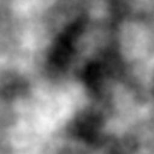
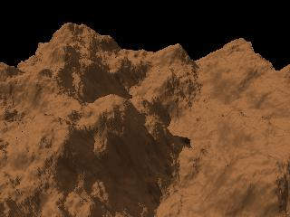
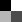
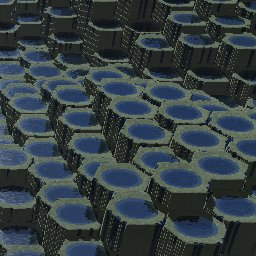
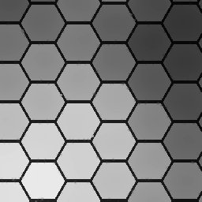
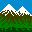

Comment
créer une "Chaussée des géants" avec Geomorph
Utilisation de l'outil de
"relèvement des bords" et d'une "carte des eaux"
Cette page montre que l'outil de
"relèvement des bords"  peut être utilisé
pour créer des terrasses irriguées en superposant une
"carte des eaux" à un terrain transformé en terrasses.
peut être utilisé
pour créer des terrasses irriguées en superposant une
"carte des eaux" à un terrain transformé en terrasses.
La même technique peut être utilisée pour
améliorer le réalisme d'un rivage rocheux de type
"Chaussée des géants", en recouvrant de flaques d'eau le
sommet des piliers de basalte.
Le script giant_causeway.pov est
proposé pour ce tutoriel. C'est un dérivé de terraces.pov
mais qui utilise une texture rocheuse, une échelle et un
éclairage différents.
Étape 1 - L'exemple montré a été
réalisé avec un terrain "Subdivision 2"  de 1024x1024.
Une grande image donne des frontières de cellulles plus
naturelles et offre davantage de latitude pour éroder les bords
des piliers.
de 1024x1024.
Une grande image donne des frontières de cellulles plus
naturelles et offre davantage de latitude pour éroder les bords
des piliers.
Étape
1 - Le
terrain "Subdivision 2" standard
 
Étape 2 - Le terrain
original
remplit presque totalement l'intervalle d'altitude (0-65535). Il faut
un
peu de jeu pour relever les bords des piliers les plus
élevés. Choisissez l'outil
"Luminosité / Contraste" ,
diminuez le contraste de -30 ou à peu près.
Étape 3 - Stratifiez le
terrain
avec l'outil "Chaussée des géants"  . Ici un
rayon de 30 a été utilisé, avec une largeur de
lignes séparatrices de 2 pixels et un rayon de lissage de 2
pixels. Utilisez un rayon de lissage égal ou inférieur
à la largeur des lignes, autrement l'outil de relèvement
des bords aura de la difficulté à détecter les
bords des cellulles et certain bords ne seront pas relevés.
. Ici un
rayon de 30 a été utilisé, avec une largeur de
lignes séparatrices de 2 pixels et un rayon de lissage de 2
pixels. Utilisez un rayon de lissage égal ou inférieur
à la largeur des lignes, autrement l'outil de relèvement
des bords aura de la difficulté à détecter les
bords des cellulles et certain bords ne seront pas relevés.
Étape 4 - (Optionnelle)
Si vous désirez des flaques inégales, dans le dialogue
"Chaussée des géants", avant d'accepter la stratification
du terrain, allez dans le sous-dialogue de fusion et mélangez la
source avec le résultat en utilisant une proportion d'environ
70% du résultat. Par défaut, la proportion est de 100% du
résultat plus 0% de la source. Cela ajoutera du bruit au sommet
des piliers.
Étape
4 - Pour éviter des flaques trop régulières comme
dans cette image,
mélangez la source et le résultat dans l'outil
"Chaussée des géants"

Étape 5 - La
création de la carte des eaux: Si vous avez sauté
l'étape 4, clonez le terrain avec l'outil "Copiez sous un autre
nom" dans la barre de menus  , appelez le clone
hf_water.png. Si vous avez
fait l'étape 4, votre image courante ne peut pas être
utilisée comme carte des eaux parce que le sommet des piliers
n'est plus plat. Dans ce cas, sauvegardez votre terrain sous le nom de
votre choix, créez un nouveau terrain en répétant
les étapes 1 à 3 et enregistrez le résultat sous hf_water.png.
, appelez le clone
hf_water.png. Si vous avez
fait l'étape 4, votre image courante ne peut pas être
utilisée comme carte des eaux parce que le sommet des piliers
n'est plus plat. Dans ce cas, sauvegardez votre terrain sous le nom de
votre choix, créez un nouveau terrain en répétant
les étapes 1 à 3 et enregistrez le résultat sous hf_water.png.
Étape 6 - Utilisez
l'outil de relèvement des bords sur le
terrain principal, avec le rayon prédéfini de 20.
Contrairement à ce qui est recommandé dans le tutoriel
sur les terrasses, vous devez ici cocher la case "Utiliser un seuil
pour le noir", afin que les lignes noires soient reconnues comme les
frontières des cellules. L'échelle de contrôle du
niveau de soulèvement apparaît après avoir
appliqué la transformation. Utilisez un niveau de l'ordre de 5
à 10. Ici, 7 a été spécifié.
Étape 7 - (Optionnelle)
Si vous désirez des bords légèrement
irréguliers comme dans l'exemple montré, utilisez
l'"érosion par la pluie"  sur le terrain principal, avec les
réglages proposés.
sur le terrain principal, avec les
réglages proposés.
Étape 8 - (Optionnelle)
Si vous avez fait l'étape 7, certains bords de la carte des eaux
peuvent être trop larges et déborder la frontière
du pilier. Utilisez l'outil de crêtes  sur hf_water.png pour rendre plus
étroites les cellules de la carte des eaux. Le nombre de
répétitions par défaut, de 3, est probablement
trop élevé. Diminuez ce paramètre à 1.
sur hf_water.png pour rendre plus
étroites les cellules de la carte des eaux. Le nombre de
répétitions par défaut, de 3, est probablement
trop élevé. Diminuez ce paramètre à 1.
Une
partie du terrain principal, après que les côtés
ont été soulevés et érodés

Étape 9 - Choisissez la
caméra prédéfinie 2, exécutez giant_causeway.pov.
Étape 10 - Ajustez le
contraste avec l'outil de luminosité / contraste ,
si requis : Certains piliers peuvent apparaître plus
élevés que l'eau, d'autres moins élevés. Si
les piliers les plus élevés sont sous l'eau, augmentez le
contraste du terrain. Si les piliers les plus élevés sont
au-dessus de l'eau, et les moins élevés sous l'eau,
diminuez le contraste. Un changement de niveau de
±1 à ±5 devrait être suffisant. Vous pouvez
exécuter le script Povray avec différents niveaux avant
d'accepter le changement. Parfois vous pourriez aussi avoir à
ajuster légèrement la luminosité.
Ici
le contraste du terrain devrait être diminué pour abaisser
le niveau de l'eau sur les piliers les plus élevés
Étape 11 - Dans le cas
présent, pour remplir l'image résultante avec le terrain,
j'ai édité giant_causeway.pov
pour étirer le
terrain dans les directions X et Z par un facteur de 1.7, et
réduit la hauteur (Y) par un facteur de 0.7. Ces changements
apparaissent comme des commentaires dans le script distribué
avec la version 0.4. N'oubliez pas de changer l'échelle du
terrain et de la carte des eaux en même temps. Comme à
l'habitude, les lignes à changer dans giant_causeway.pov se trouvent
après la ligne
/**********/ :
/*******************************************************************************************/
object {hf scale <1,1,1> translate y*0 texture {rock3 scale 0.6}}
// object {hf scale <1.7,0.7,1.7> translate y*0 texture {rock3
scale 0.6}}
#ifdef (water)
object {water scale <1,1,1>}
// object {water scale <1.7,0.7,1.7>}
#end
Si vous êtes satisfait avec le facteur d'échelle
(c'est-à-dire, l'échelle X = l'échelle Y
= l'échelle Z), naturellement, vous n'avez pas besoin
d'étirer le terrain afin de remplir l'image. Diminuer l'angle de
la caméra dans l'aperçu peut faire l'affaire.
Étape 12 - (Optionnelle)
L'exemple montré a subi une rotation de 45 degrés
à l'aide de l'outil de rotation , pour obtenir un résultat
moins monotone. La carte des eaux doit subir la même rotation.
Maintenant cette scène pourrait (presque) être
utilisée comme composante d'un paysage maritime.
Possibilités
d'amélioration
Il y a visiblement certains aspects à améliorer:
(1) Les piliers de basalte sont habituellement moins réguliers.
Une façon de simuler cela serait de partir de l'outil
"réseau de fractures" et de remplir des cellules de distribution
"régulière - perturbée" avec une stratification du
terrain. Ce n'est pas possible avec la version 0.40 de Geomorph. Un
travail pour une future version, peut-être.
(2) Les piliers de basalte présente habituellement des
craquelures, sur le plan X-Z et dans l'axe Y. Avec la version 0.40 de
Geomorph, des craquelures ne peuvent être faites que pour
l'ensemble du terrain. Dans la réalité, les craquelures
X-Z sont souvent limitées par les frontières des
cellules. Par ailleurs, les craquelures verticales (Y) pourraient
probablement être simulées en appliquant une texture quand
la pente est de 90 degrés.
(3) La pierre entourant les flaques ne paraît pas assez humide.
Il n'est pas trop difficile de simuler de la pierre humide quand l'eau
forme un plan unique (voyez le récif de granite dans le tutoriel sur les
crevasses). Mais ici, les flaques sont à
différents niveaux. Une solution serait d'utiliser une texture
humide pour l'ensemble du rocher afin de simuler un jour de pluie...
Plus sérieusement, le problème pourrait peut-être
être résolu par une carte de textures ("texture map")
générée en faisant l'intersection entre le terrain
principal et une carte des eaux un peu plus élevée
(lumineuse) que l'originale. Tous les points sous la carte des eaux
modifiée devraient recevoir une textures humide. Une autre
solution serait d'expérimenter avec une texture de pente: les
parties humides sont généralement celles où la
pente est la plus basse.
Tout commentaire ou suggestion sont les bienvenus.
Écrit en décembre 2007
 Retour à
l'index de la documentation
Contact:
Patrice St-Gelais